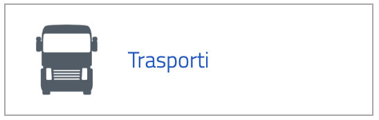

Tipi di Dati Disponibili nei Settori Open Data Italiani
I dati aperti italiani coprono una vasta gamma di categorie, ognuna delle quali ha un impatto significativo su diversi aspetti della vita sociale, economica e culturale. Ecco una panoramica dettagliata dei tipi di dati aperti più comuni forniti dagli enti pubblici in Italia:
Dati Geografici
Questi dati includono informazioni sulla geografia fisica e amministrativa, come mappe, confini territoriali, dati demografici per regione o città, e informazioni catastali.

Dati Ambientali
Comprendono dati sulla qualità dell'aria, delle acque, livelli di inquinamento, rifiuti prodotti e riciclati, e dati climatici.
Dati Economici e Finanziari
Forniscono informazioni su bilanci pubblici, spese, investimenti, entrate fiscali e altri dati economici.
Dati sulla Salute
Includono statistiche sull'incidenza di varie malattie, dati sui servizi sanitari, informazioni sugli ospedali e le loro prestazioni, e campagne di prevenzione.
Dati di Mobilità e Trasporti
Coprono tutto ciò che riguarda i trasporti pubblici, traffico stradale, infrastrutture di trasporto, incidenti e mobilità urbana.
Dati Culturali e Turistici
Questi dati includono informazioni su monumenti, musei, siti archeologici, eventi culturali, e flussi turistici.
Dati di Istruzione
Comprendono statistiche su scuole, università, risultati di esami, programmi educativi e risorse di apprendimento.
Dati di Utilità Pubblica
Includono informazioni su acqua, gas ed energia, come i consumi, le tariffe e le infrastrutture di servizio.
Dati MEF
Per i cittadini è uno strumento di valutazione e controllo delle scelte operate dagli enti.